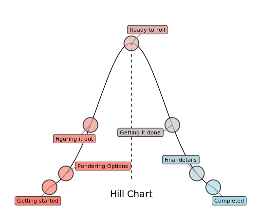

Experiments
WHAT I AM UP TO?
I am eager to share a few experiments & side-projects I have developed over the years, and glad to have this space to fill with other projects-to-be.
HILL CHARTS
- Summary: I have used Hill Charts since the first day I came to know it through Basecamp. It is an intuitive way to track the advance of a given task, from conception to completion, while having a high-level moving picture of a project.
- Where?: See my blog post here, source code here, and live app here.
